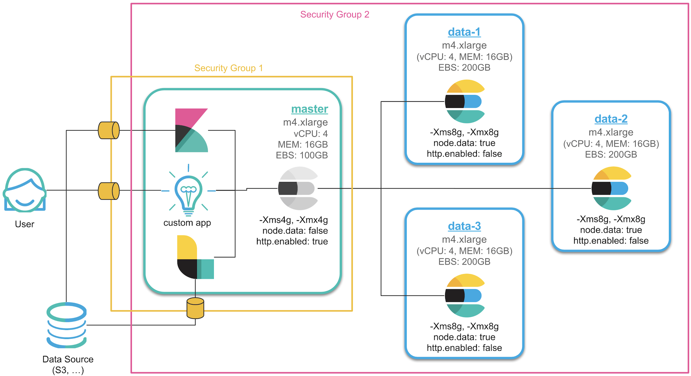

이번 포스트에서는 클러스터 구성 및 마스터, 데이터 노드 설정에 대해서 다루도록 하겠습니다. 이전 또는 이후 내용들은 아래 포스트에서 확인하세요.
1. 서버 생성 및 Elasticsearch RPM 설치
2. 메모리, 네트워크 설정 및 플러그인 설치
3. 클러스터 구성 및 마스터, 데이터 노드 설정
4. Kibana 설치 및 X-Pack Monitoring 확인
5. NFS 구성 및 elasticsearch 추가 설정
6. X-Pack Security를 이용한 SSL 및 TLS 설정
7. X-Pack License 적용 및 사용자 생성
8. Logstash 설치 및 Elasticsearch 기본 템플릿 설정
데이터 노드 추가
앞의 두 포스트에서 Elasticsearch 서버 설치를 완료 했습니다. 4개 서버로 구성된 클러스터를 만들기 위해서는 앞의 내용대로 서버를 하나씩 만드는 방법도 있겠지만, AWS 에는 서버의 이미지 스냅샷을 찍어 그 이미지를 기준으로 새로운 서버를 만드는 기능이 있어 저는 그 방법을 이용하도록 하겠습니다.
먼저 앞서 만든 인스턴스의 이미지를 저장합니다.
이제 새로운 인스턴스를 생성할 때 저장 해 놓은 이미지를 가지고 생성을 합니다.
새 서버들이 완성되면 이 서버들 끼리는 통신이 가능하도록 보안 그룹을 설정 해 주어야 합니다.
보안 그룹을 하나 만들고 나서 소스에 해당 보안 그룹의 id를 적으면 그 보안그룹에 소속된 인스턴스 끼리 자유롭게 통신이 가능합니다.
저는 아래와 같이 보안 그룹을 2개를 만들어 한 그룹에는 4개 인스턴스 전체를, 한 그룹은 마스터 노드가 속해 있는 인스턴스를 할당해서 일부 포트만 오픈 했습니다. 이렇게 하면 4개의 노드들은 자유롭게 데이터를 주고받을 수 있고, 외부에서 접속하기 위해서는 마스터 노드를 통해서만 접근이 가능합니다.

이제 설정을 완료 한 뒤에 추가한 3개의 노드들을 차례로 실행시키면서 마스터 노드의 로그를 살펴보면…
노드 바인딩이 되지 않습니다. 추가한 노드들의 로그를 살펴보면 아래와 같은 에러 로그들이 보입니다.
[2017-12-29T08:17:53,144][INFO ][o.e.d.z.ZenDiscovery ] [es-master] failed to send join request to master |
아마 이미지를 복사하지 않고 하나씩 만들었다면 위와 같은 로그가 나타나지 않을 것입니다. 처음 저장한 이미지에서 elasticsearch의 path.data 경로에 이미 생성된 노드의 정보가 있어서 오류가 난 것입니다. 추가한 노드들에서는 이 데이터들을 먼저 삭제 한 후에 실행을 해야 합니다.
데이터 노드를 추가한 뒤에 먼저 다음 설정들을 진행합니다.
서비스 중지
sudo service elasticsearch stop
데이터 디렉토리 삭제
sudo rm -rf /var/lib/elasticsearch/nodes
호스트 네임 변경: 노드 이름이 호스트명으로 할당되도록 설정되어 있으므로, 각 데이터 노드들의 호스트명을 해당 노드에 맞게 바꿔줍니다.
sudo vim /etc/sysconfig/network
HOSTNAME=es-data-1이제 서버를 재시작 합니다.
sudo reboot
데이터 노드를 하나씩 재실행 시키면서 마스터 노드의 로그를 보면 노드가 하나씩 바인딩 되는 것을 확인할 수 있습니다.
[2018-01-02T05:57:55,000][INFO ][o.e.c.s.MasterService ] [es-master] zen-disco-node-join[{es-data-1}{OgBrTj6zQ}{WTWfWw3w}{192.168.0.3}{192.168.0.3:9300}{ml.max_open_jobs=10, ml.enabled=true}], reason: added {{es-data-1}{OgBrTj6zQ}{WTWfWw3w}{192.168.0.3}{192.168.0.3:9300}{ml.max_open_jobs=10, ml.enabled=true},} |
configuration 설정.
클러스터 구성이 완료 되었으니 이제 각 노드별로 상이한 옵션들을 설정 하겠습니다.
먼저 마스터 노드의 Java Heap 메모리는 4gb로 조정합니다.
sudo vim /etc/elasticsearch/jvm.options |
마스터 노드는 데이터를 저장하지 않도록 elasticsearch.yml 에서 node.master: true, node.data: false 를 추가합니다.sudo vim /etc/elasticsearch/elasticsearch.yml
node.master: true
node.data: false
각 데이터 노드들은 반대로 node.master: false, node.data: true 를 추가합니다.sudo vim /etc/elasticsearch/elasticsearch.yml
node.master: false
node.data: true
이제 모든 노드들의 서비스 또는 서버를 재 시작합니다.

지금까지 클러스터 구성 및 마스터, 데이터 노드 설정에 대해 살펴보았습니다.
다음 포스트에서는 Kibana를 설치하고 클러스터에 데이터들이 저희 구상대로 정상적으로 분배 되었는지 X-Pack Monitoring 을 통해서 확인 해 보도록 하겠습니다.
1. 서버 생성 및 Elasticsearch RPM 설치
2. 메모리, 네트워크 설정 및 플러그인 설치
3. 클러스터 구성 및 마스터, 데이터 노드 설정
4. Kibana 설치 및 X-Pack Monitoring 확인
5. NFS 구성 및 elasticsearch 추가 설정
6. X-Pack Security를 이용한 SSL 및 TLS 설정
7. X-Pack License 적용 및 사용자 생성
8. Logstash 설치 및 Elasticsearch 기본 템플릿 설정